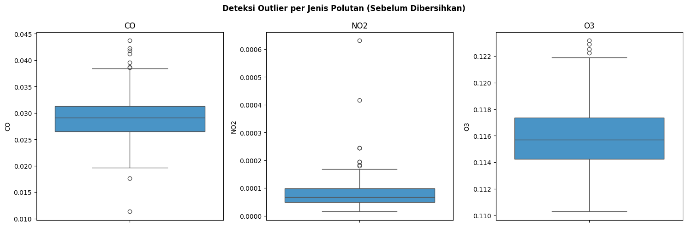
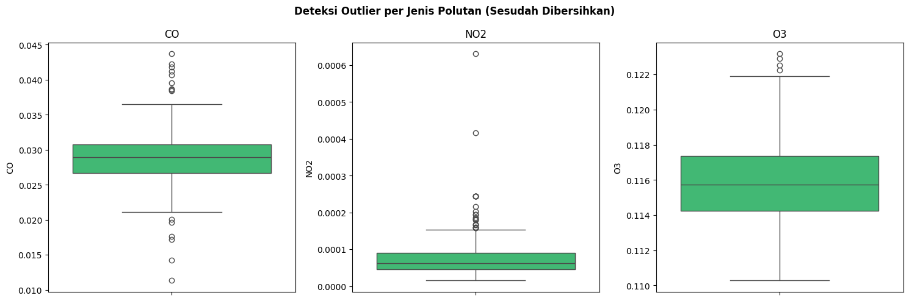
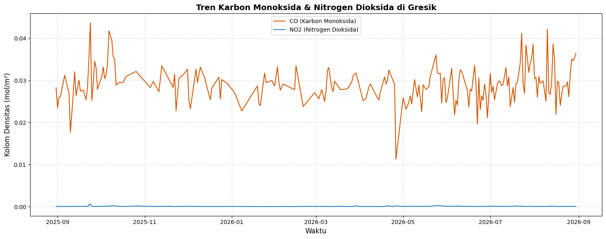
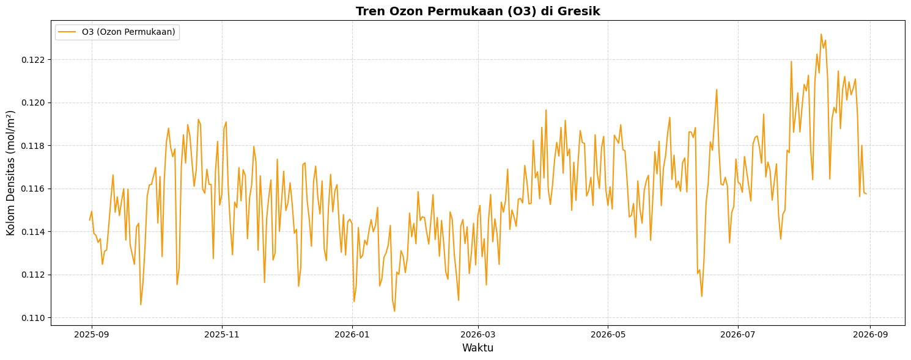
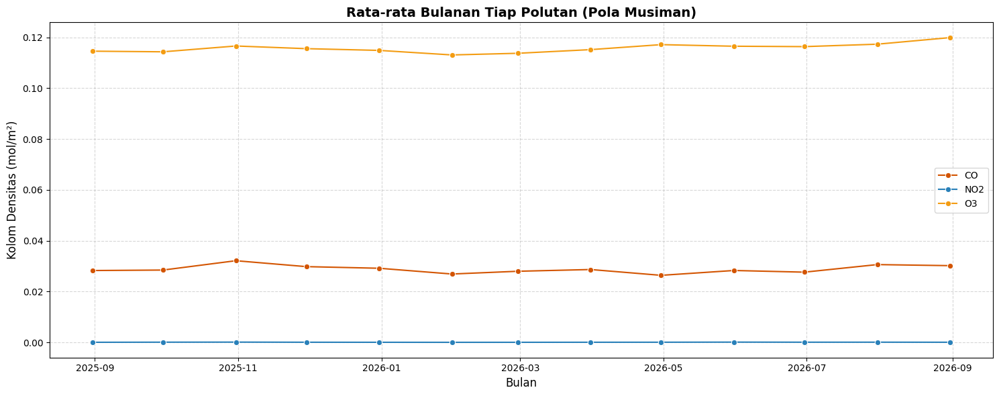
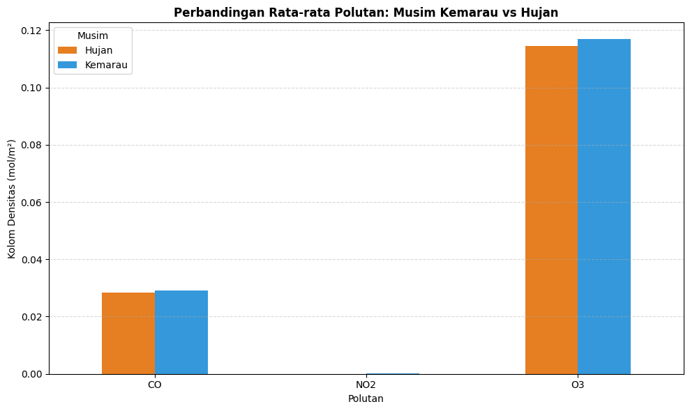
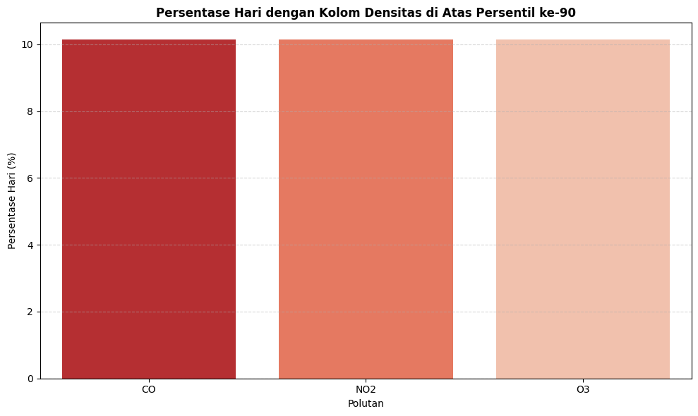

3. Proses Crawling & Pemrosesan Data#
Tahapan ini mencakup pengumpulan data dari API berdasarkan batas wilayah spasial, hingga pembersihan dan penyimpanan data ke dalam format CSV.
A. Setup Batas Wilayah GeoJSON#
Kita mulai dengan mendefinisikan batas poligon (Polygon) wilayah Gresik yang telah disiapkan, lalu mencari titik tengah (centroid) dari area tersebut untuk parameter API.
import pandas as pd
import requests
import matplotlib.pyplot as plt
import seaborn as sns
from shapely.geometry import Polygon
# Definisi koordinat batas wilayah (Gresik) menggunakan GeoJSON
geojson_coords = [
[
112.6124555,
-7.1337934
],
[
112.6033317,
-7.1496527
],
[
112.6203805,
-7.1596966
],
[
112.63683,
-7.1370975
],
[
112.6124555,
-7.1337934
]
]
# Konversi ke bentuk Poligon
area_polygon = Polygon(geojson_coords)
# Mendapatkan koordinat pusat (centroid) untuk API
centroid_lon = area_polygon.centroid.x
centroid_lat = area_polygon.centroid.y
print(f"Titik Pusat Penarikan Data -> Latitude: {centroid_lat:.5f}, Longitude: {centroid_lon:.5f}")
Titik Pusat Penarikan Data -> Latitude: -7.14510, Longitude: 112.61904
Note
Ganti daftar geojson_coords di atas dengan titik-titik batas wilayah domisili/kajian Anda masing-masing (bukan Gresik) jika tugas mensyaratkan wilayah yang berbeda. Koordinat bisa diambil dari geojson.io atau batas administratif resmi.
Untuk memastikan batas wilayah yang dipakai sudah sesuai (bukan hanya berupa angka koordinat), kita bisa memvisualisasikan poligon tersebut di atas peta interaktif menggunakan folium:
import folium
# Membuat peta terpusat di centroid wilayah kajian
peta_wilayah = folium.Map(location=[centroid_lat, centroid_lon], zoom_start=13)
# Menambahkan poligon batas wilayah Gresik ke peta
folium.Polygon(
locations=[(lat, lon) for lon, lat in geojson_coords],
color='#e74c3c',
weight=3,
fill=True,
fill_opacity=0.2,
tooltip='Batas Wilayah Kajian - Gresik'
).add_to(peta_wilayah)
# Menandai titik pusat (centroid) tempat data ditarik
folium.Marker(
location=[centroid_lat, centroid_lon],
popup='Titik Pengambilan Data API',
icon=folium.Icon(color='blue', icon='cloud')
).add_to(peta_wilayah)
peta_wilayah
B. Mengunduh Data dari API#
Data kualitas udara (NO2, CO, O3) untuk wilayah kajian diperoleh dari citra satelit Sentinel-5P
melalui proses crawling terpisah (crawl_data.py), lalu dimuat kembali di sini dari hasil yang
sudah tersimpan.
csv_mentah = "polutan_gresik_2025_2026.csv"
df = pd.read_csv(csv_mentah)
df['time'] = pd.to_datetime(df['time'])
print(f"Data berhasil dimuat dari: {csv_mentah}")
print(f"Rentang waktu: {df['time'].min()} s/d {df['time'].max()}")
print(f"Jumlah baris: {len(df)}")
df.head()
Data berhasil dimuat dari: polutan_gresik_2025_2026.csv
Rentang waktu: 2025-08-31 00:00:00 s/d 2026-08-30 00:00:00
Jumlah baris: 365
| time | NO2 | CO | O3 | |
|---|---|---|---|---|
| 0 | 2025-08-31 | 0.000049 | 0.028270 | 0.114529 |
| 1 | 2025-09-01 | 0.000045 | 0.023488 | 0.114932 |
| 2 | 2025-09-02 | 0.000038 | 0.025977 | 0.113915 |
| 3 | 2025-09-03 | 0.000079 | 0.026092 | 0.113808 |
| 4 | 2025-09-04 | 0.000060 | NaN | 0.113487 |
C. Data Preparation & Penyesuaian Urutan#
Data mentah hasil crawling (kolom time, NO2, CO, O3) selanjutnya dibersihkan:
pengecekan nilai kosong, nilai negatif, deteksi outlier, hingga interpolasi.
# --- Eksplorasi awal sebelum pembersihan (lihat penjelasan Bagian 2.4) ---
df.info()
<class 'pandas.core.frame.DataFrame'>
RangeIndex: 365 entries, 0 to 364
Data columns (total 4 columns):
# Column Non-Null Count Dtype
--- ------ -------------- -----
0 time 365 non-null datetime64[ns]
1 NO2 188 non-null float64
2 CO 200 non-null float64
3 O3 361 non-null float64
dtypes: datetime64[ns](1), float64(3)
memory usage: 11.5 KB
df.describe()
| time | NO2 | CO | O3 | |
|---|---|---|---|---|
| count | 365 | 188.000000 | 200.000000 | 361.000000 |
| mean | 2026-03-01 00:00:00.000000256 | 0.000081 | 0.029156 | 0.115847 |
| min | 2025-08-31 00:00:00 | 0.000015 | 0.011331 | 0.110287 |
| 25% | 2025-11-30 00:00:00 | 0.000048 | 0.026497 | 0.114258 |
| 50% | 2026-03-01 00:00:00 | 0.000067 | 0.029116 | 0.115711 |
| 75% | 2026-05-31 00:00:00 | 0.000098 | 0.031299 | 0.117357 |
| max | 2026-08-30 00:00:00 | 0.000631 | 0.043723 | 0.123176 |
| std | NaN | 0.000064 | 0.004248 | 0.002435 |
# Cek jumlah missing values (NaN) di setiap kolom
print("Jumlah data kosong (missing values) per kolom:")
print(df.isna().sum())
Jumlah data kosong (missing values) per kolom:
time 0
NO2 177
CO 165
O3 4
dtype: int64
# Cek jumlah nilai negatif per kolom SEBELUM dibersihkan
kolom_polutan = ['CO', 'NO2', 'O3']
for col in kolom_polutan:
jumlah_negatif = (df[col] < 0).sum()
print(f"Jumlah nilai negatif pada {col}: {jumlah_negatif}")
Jumlah nilai negatif pada CO: 0
Jumlah nilai negatif pada NO2: 0
Jumlah nilai negatif pada O3: 0
# Deteksi outlier ekstrem menggunakan visualisasi boxplot per kolom polutan (SEBELUM dibersihkan)
fig, axes = plt.subplots(1, 3, figsize=(15, 5))
for i, col in enumerate(kolom_polutan):
sns.boxplot(y=df[col], ax=axes[i], color='#3498db')
axes[i].set_title(col)
plt.suptitle('Deteksi Outlier per Jenis Polutan (Sebelum Dibersihkan)', fontweight='bold')
plt.tight_layout()
plt.show()

Membersihkan anomali: mengubah konsentrasi negatif menjadi Missing Values (NaN)#
for col in ['CO', 'NO2', 'O3']:
df.loc[df[col] < 0, col] = None
# Mengisi missing values (NaN) menggunakan interpolasi linear berbasis waktu
# Interpolasi dipilih karena data bersifat time-series dan nilai polutan
# cenderung berubah secara gradual antar-hari, bukan melompat drastis
#
# CATATAN PENTING: method='time' saja TIDAK bisa mengisi NaN yang berada di
# ujung awal atau ujung akhir deret waktu (leading/trailing NaN), karena tidak
# ada titik data di salah satu sisinya untuk diinterpolasi. Oleh karena itu
# ditambahkan limit_direction='both' agar NaN di kedua ujung juga tertangani
# (menggunakan nilai valid terdekat sebagai isian/extrapolasi sederhana).
df = df.set_index('time')
kolom_gas_tersedia = ['CO', 'NO2', 'O3']
df[kolom_gas_tersedia] = df[kolom_gas_tersedia].interpolate(
method='time', limit_direction='both'
)
df = df.reset_index()
# Verifikasi ulang tidak ada lagi missing values setelah interpolasi
print("Sisa missing values setelah interpolasi:")
print(df.isna().sum())
Sisa missing values setelah interpolasi:
time 0
NO2 0
CO 0
O3 0
dtype: int64
# Deteksi outlier SESUDAH dibersihkan, sebagai pembanding terhadap boxplot sebelumnya.
kolom_polutan_bersih = ['CO', 'NO2', 'O3']
fig, axes = plt.subplots(1, 3, figsize=(15, 5))
for i, col in enumerate(kolom_polutan_bersih):
sns.boxplot(y=df[col], ax=axes[i], color='#2ecc71')
axes[i].set_title(col)
plt.suptitle('Deteksi Outlier per Jenis Polutan (Sesudah Dibersihkan)', fontweight='bold')
plt.tight_layout()
plt.show()
# Catatan interpretasi: outlier yang masih tersisa setelah pembersihan nilai
# negatif tidak serta-merta dihapus, karena bisa jadi merupakan kejadian nyata
# (misalnya lonjakan akibat kebakaran lahan/kemacetan ekstrem), bukan
# error pengukuran. Outlier semacam ini dibiarkan dalam data namun dicatat
# sebagai catatan analisis lanjutan.

Mengurutkan waktu secara ASCENDING (Data dari OpenEO sudah dalam bentuk harian)#
df = df.sort_values(by='time', ascending=True).reset_index(drop=True)
Menyimpan Data yang Sudah Dibersihkan menjadi CSV#
# Disimpan dengan nama berbeda dari CSV mentah hasil crawling (polutan_gresik_2025_2026.csv)
# supaya data mentah dan data yang sudah dibersihkan tetap bisa dibedakan/ditelusuri.
csv_filename_bersih = "polutan_gresik_2025_2026_bersih.csv"
df.to_csv(csv_filename_bersih, index=False)
print(f"Data yang sudah dibersihkan disimpan ke dalam bentuk file: {csv_filename_bersih}")
Data yang sudah dibersihkan disimpan ke dalam bentuk file: polutan_gresik_2025_2026_bersih.csv
Menampilkan cuplikan data teratas#
df.head()
| time | NO2 | CO | O3 | |
|---|---|---|---|---|
| 0 | 2025-08-31 | 0.000049 | 0.028270 | 0.114529 |
| 1 | 2025-09-01 | 0.000045 | 0.023488 | 0.114932 |
| 2 | 2025-09-02 | 0.000038 | 0.025977 | 0.113915 |
| 3 | 2025-09-03 | 0.000079 | 0.026092 | 0.113808 |
| 4 | 2025-09-04 | 0.000060 | 0.027812 | 0.113487 |
4. Visualisasi Grafik (Time Series)#
Langkah terakhir adalah memvisualisasikan data runtun waktu yang telah bersih untuk melihat pergerakan tren kualitas udaranya, sekaligus menjawab ketiga pertanyaan pada Bagian 1.3: tren umum, pola musiman, dan frekuensi pelanggaran ambang batas.
A. Grafik Gas Emisi (CO dan NO2)#
Konfigurasi kanvas Matplotlib#
plt.figure(figsize=(15, 6))
# Plot Garis untuk Karbon Monoksida dan Nitrogen Dioksida
sns.lineplot(data=df, x='time', y='CO', label='CO (Karbon Monoksida)', color='#d35400')
sns.lineplot(data=df, x='time', y='NO2', label='NO2 (Nitrogen Dioksida)', color='#2980b9')
# Styling Grafik
plt.title('Tren Karbon Monoksida & Nitrogen Dioksida di Gresik', fontsize=14, fontweight='bold')
plt.xlabel('Waktu', fontsize=12)
plt.ylabel('Kolom Densitas (mol/m²)', fontsize=12)
plt.legend()
plt.grid(True, linestyle='--', alpha=0.5)
plt.tight_layout()
plt.show()

B. Grafik Ozon Permukaan (O3)#
Karena O3 terbentuk dari reaksi fotokimia, polanya cenderung berbeda dengan polutan hasil emisi langsung (CO, NO2), sehingga divisualisasikan secara terpisah.
plt.figure(figsize=(15, 6))
sns.lineplot(data=df, x='time', y='O3', label='O3 (Ozon Permukaan)', color='#f39c12')
plt.title('Tren Ozon Permukaan (O3) di Gresik', fontsize=14, fontweight='bold')
plt.xlabel('Waktu', fontsize=12)
plt.ylabel('Kolom Densitas (mol/m²)', fontsize=12)
plt.legend()
plt.grid(True, linestyle='--', alpha=0.5)
plt.tight_layout()
plt.show()

C. Pola Musiman (Kemarau vs Penghujan)#
Untuk melihat pola musiman, data di-resample menjadi rata-rata bulanan, kemudian dikelompokkan ke musim kemarau (April–Oktober) dan musim hujan (November–Maret) sesuai pola iklim umum di Jawa Timur.
# Resample menjadi rata-rata bulanan untuk melihat tren musiman
df_monthly = df.resample('M', on='time').mean(numeric_only=True).reset_index()
plt.figure(figsize=(15, 6))
for col, color in zip(['CO', 'NO2', 'O3'],
['#d35400', '#2980b9', '#f39c12']):
sns.lineplot(data=df_monthly, x='time', y=col, label=col, color=color, marker='o')
plt.title('Rata-rata Bulanan Tiap Polutan (Pola Musiman)', fontsize=14, fontweight='bold')
plt.xlabel('Bulan', fontsize=12)
plt.ylabel('Kolom Densitas (mol/m²)', fontsize=12)
plt.legend()
plt.grid(True, linestyle='--', alpha=0.5)
plt.tight_layout()
plt.show()
C:\Users\OKAN\AppData\Local\Temp\ipykernel_11728\285632328.py:2: FutureWarning: 'M' is deprecated and will be removed in a future version, please use 'ME' instead.
df_monthly = df.resample('M', on='time').mean(numeric_only=True).reset_index()

# Klasifikasi musim: Kemarau (Apr-Okt) vs Hujan (Nov-Mar), pola umum Jawa Timur
def klasifikasi_musim(bulan):
return 'Kemarau' if bulan in [4, 5, 6, 7, 8, 9, 10] else 'Hujan'
df['musim'] = df['time'].dt.month.apply(klasifikasi_musim)
# Perbandingan rata-rata konsentrasi tiap polutan antar musim
perbandingan_musim = df.groupby('musim')[['CO', 'NO2', 'O3']].mean()
print("Rata-rata konsentrasi polutan per musim:")
perbandingan_musim
Rata-rata konsentrasi polutan per musim:
| CO | NO2 | O3 | |
|---|---|---|---|
| musim | |||
| Hujan | 0.028502 | 0.000053 | 0.114458 |
| Kemarau | 0.029108 | 0.000092 | 0.116830 |
perbandingan_musim.T.plot(kind='bar', figsize=(10, 6), color=['#e67e22', '#3498db'])
plt.title('Perbandingan Rata-rata Polutan: Musim Kemarau vs Hujan', fontweight='bold')
plt.ylabel('Kolom Densitas (mol/m²)')
plt.xlabel('Polutan')
plt.xticks(rotation=0)
plt.legend(title='Musim')
plt.grid(True, axis='y', linestyle='--', alpha=0.5)
plt.tight_layout()
plt.show()

D. Frekuensi Hari dengan Kolom Densitas Tinggi#
Bagian ini menjawab pertanyaan riset terakhir: “polutan mana yang paling sering berada pada level tinggi?”. Baku mutu udara ambien nasional (PP No. 22 Tahun 2021) tidak dipakai di bagian ini karena baku mutu tersebut mengatur konsentrasi permukaan (µg/m³) hasil pengukuran ground-station, sedangkan data Sentinel-5P yang dipakai di sini mengukur kolom densitas atmosfer (mol/m²) dari luar angkasa — dua besaran fisik yang berbeda dan tidak bisa dibandingkan langsung tanpa model konversi atmosfer tambahan.
Sebagai gantinya, “level tinggi” didefinisikan secara statistik: hari-hari dengan nilai berada di atas persentil ke-90 dari data setahun untuk masing-masing polutan. Pendekatan ini tetap menjawab pertanyaan riset (polutan mana yang paling sering “memuncak”) tanpa mengklaim kepatuhan terhadap baku mutu resmi yang sebenarnya tidak berlaku untuk jenis data ini.
# Ambang referensi statistik: persentil ke-90 dari data masing-masing polutan
# (bukan baku mutu resmi, karena tidak ada standar nasional untuk kolom densitas atmosfer)
kolom_gas = ['CO', 'NO2', 'O3']
ambang_referensi = {col: df[col].quantile(0.90) for col in kolom_gas}
hasil_pelanggaran = []
for polutan, batas in ambang_referensi.items():
jumlah_lewat = (df[polutan] > batas).sum()
total_data = df[polutan].notna().sum()
persen_lewat = (jumlah_lewat / total_data) * 100 if total_data > 0 else 0
hasil_pelanggaran.append({
'Polutan': polutan,
'Ambang Referensi P90 (mol/m²)': round(batas, 6),
'Jumlah Hari Melebihi': jumlah_lewat,
'Persentase Hari Melebihi (%)': round(persen_lewat, 2)
})
df_pelanggaran = pd.DataFrame(hasil_pelanggaran).sort_values(
by='Persentase Hari Melebihi (%)', ascending=False
).reset_index(drop=True)
print("Ringkasan frekuensi hari dengan kolom densitas tinggi (di atas persentil ke-90) per polutan:")
df_pelanggaran
Ringkasan frekuensi hari dengan kolom densitas tinggi (di atas persentil ke-90) per polutan:
| Polutan | Ambang Referensi P90 (mol/m²) | Jumlah Hari Melebihi | Persentase Hari Melebihi (%) | |
|---|---|---|---|---|
| 0 | CO | 0.032771 | 37 | 10.14 |
| 1 | NO2 | 0.000133 | 37 | 10.14 |
| 2 | O3 | 0.118914 | 37 | 10.14 |
plt.figure(figsize=(10, 6))
sns.barplot(data=df_pelanggaran, x='Polutan', y='Persentase Hari Melebihi (%)',
hue='Polutan', palette='Reds_r', legend=False)
plt.title('Persentase Hari dengan Kolom Densitas di Atas Persentil ke-90', fontweight='bold')
plt.ylabel('Persentase Hari (%)')
plt.xlabel('Polutan')
plt.grid(True, axis='y', linestyle='--', alpha=0.5)
plt.tight_layout()
plt.show()

Note
Persentil ke-90 dihitung secara terpisah untuk masing-masing polutan berdasarkan data satu tahun di wilayah kajian ini sendiri (bersifat relatif, bukan ambang mutlak). Artinya “level tinggi” di sini menunjukkan hari-hari dengan kolom densitas tertinggi dibanding kondisi normal wilayah yang sama, bukan indikasi berbahaya/tidaknya secara kesehatan seperti pada baku mutu ambien nasional.
E. Ringkasan Statistik Akhir#
# Ringkasan statistik harian dari seluruh polutan setelah proses pembersihan
df[['CO', 'NO2', 'O3']].describe()
| CO | NO2 | O3 | |
|---|---|---|---|
| count | 365.000000 | 365.000000 | 365.000000 |
| mean | 0.028857 | 0.000076 | 0.115849 |
| std | 0.003732 | 0.000055 | 0.002430 |
| min | 0.011331 | 0.000015 | 0.110287 |
| 25% | 0.026708 | 0.000045 | 0.114258 |
| 50% | 0.028897 | 0.000062 | 0.115720 |
| 75% | 0.030774 | 0.000090 | 0.117357 |
| max | 0.043723 | 0.000631 | 0.123176 |